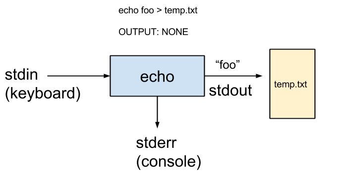
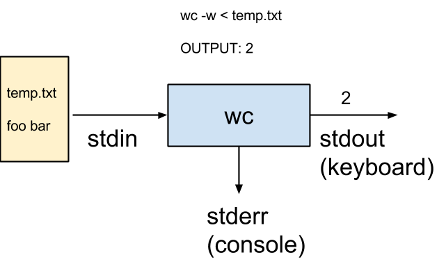

Shell: Parte 2¶
Redirezione¶
I comandi standard:
- prendono l’input da
stdin, standard input; di defaultstdine’ l’input utente dato via terminale. - scrivono l’output in
stdout, standard output; di defaultstdoute’ il terminale. - scrivono eventuali messaggi di errore in
stderr, standard error; di defaultstderre’ il terminale.
Possiamo modificare questi nomi simbolici usando gli operatori di redirezione:
cmd < filecostringecmdad usare i contenuti difilecomestdin.cmd > filecostringecmda scrivere l’output nel filefile. Sefilenon esiste viene creato, se esiste viene sovrascirtto.cmd >> filecostringecmda scrivere l’output nel filefile. Sefilenon esiste viene crato, se esiste l’output viene aggiunto alla fine del file.
Warning
Non tutti i comandi permettono di redirigere lo stdin. Tra
questi ci sono ls e cat.
Esempio. Lo stdout di ls puo’ comunque essere rediretto verso un
file arbitrario:
ls > lista_dei_file.txt
Esempio. Prendiamo il comando echo: di default prende l’input
(stdin) dal terminale (qui indicato come “keyboard”) e scrive (stdout)
su terminale. Se lanciamo:
echo foo
quello che succede e’ che echo replica (fa l’eco) di tutto quello che
scriviamo su terminale e lo stampa sul terminale. In immagini:
{kind=link}
Redirigendo lo stdout di echo a file invece lo costringiamo a
redirigere il proprio output nel file:
echo foo > temp.txt
In immagini:
{kind=link}
Esempio. Redirigere l’input di un comando funziona allo stesso modo.
Prendiamo il comando wc. Di default prende l’input da schermo:
$ wc -w
foo
bar
baz
Control-d
qui Control-d dice a wc che l’input finisce li’. L’output sara’ 3.
Pero’ possiamo costringere wc a leggere l’input da file:
wc -w < temp.txt
In immagini:
{kind=link}
Pipelines¶
Per eseguire piu’ comandi in sequenza, possiamo usare ;:
cmd1 ; cmd2 ; ... ; cmdN
In questo modo la shell esegue cmd1, poi cmd2, …, ed infine cmdN.
Si possono combinare piu’ comandi in sequenza con l’operatore di
concatetenamento | (pipe). La sintassi e’:
cmd1 | cmd2 | ... | cmdN
L’operatore | collega lo stdout di un comando allo stdin del
comando che lo segue.

Note
Il simbolo | rappresenta un tubo!
Esempio. Anticipando un po’ i tempi, se lancio:
ls | tac
ottengo che le righe stampata da ls vengano prese da tac, che le
stampa sottosopra.
Esempio. Per stampare su stdout la lista dei file nella mia home
con ls e poi contare le righe con wc, scrivo:
ls -l ~ | wc -l
Posso passare argomenti ai vari comandi esattamente come se la pipeline non ci fosse.
Esempio. Per navigare comodamente l’output di una pipeline complessa:
cmd1 | ... | cmdN | less
Il comando less permette di vedere l’output pagina per pagina. Potete
spostarvi nell’output come fareste nel manuale: vi spostate con le frecce,
potete cercare con /, etc.
Modificare Files¶
I comandi di base sono:
| comando | funzione | opzioni principali |
|---|---|---|
echo |
stampa l’eco | -n |
cat |
stampa il contenuto di un file | -n |
tac |
stampa il contenuto sottosopra | |
head |
stampa l’inzio di un file | -n |
tail |
stampa la fine di un file | -n |
Esempio. Come gia’ visto sopra, il comando echo puo’ essere usato per
creare file di testo, ad esempio:
echo 'I am the last line *ever*!' > output.txt
echo 'You are not, you /fool/!' >> output.txt
Qui le virgolette singole ' servono per evitare che la shell reagisca ad
eventuali caratteri speciali, nel nostro caso gli asterischi * e gli
slash /.
Esercizi¶
- Partendo da
~, controllare il risultato dopo ogni passaggio: - Creare una directory
informatica. E’ vuota? - Creare una directory
esercizi. - Spostarsi in
informatica. - Sempre da dentro
informatica, rinominareeserciziinesercizi-shell. - Creare una copia di
esercizi-shellininformatica. - Rimuovere la copia originale di
esercizi-shell. - Creare in
informatica/esercizi-shellun fileREADME, il cui testo deve leggere: “esercitazioni di informatica”. - Aggiungere a
READMEuna seconda riga: “Parte 1, introduzione alla shell”. - Tornare alla propria home.
- Creare una directory
- Partendo da
- Partendo da
~, controllare il risultato dopo ogni passaggio: Creare un file di testo
ain una nuova directoryoriginal. Il file deve contenere la stringa “*”.Prima di ciascuno dei punti successivi, creare una copia di
originalchiamatatemp.- Creare in
tempdue copie dia, chiamatebec. - Che differenza c’e’ tra
echo a,ls aecat a? - Che differenza c’e’ tra
mv a becp a b; rm a? - Che differenza c’e’ tra
cp a b; cp a cemv a b; mv b c? - Che differenza c’e’ tra
mv a zemkdir z; mv a z? - Che differenza c’e’ tra
echo a zemkdir z; echo a z? - Creare dieci file
a1, …,a10, poi cancellarli con una sola invocazione dirm.
- Creare in
- Partendo da
- Cosa fa il comando (alcuni dei seguenti comandi sono errati):
ls -e | head -n + 25?cat | head | tail?cat .?echo cat?cat a > b?cat << a?head > a | tail > b?ls > a; rm < a?echo KrustyIlKlown > a?tac < FILE1 | tac > FILE2
- Che differenza c’e’ tra (alcuni dei seguenti comandi sono errati):
head < a > bcat a | head > btac a | tac | head > btac < a | head | tac > b
- Che differenza c’e’ tra:
tac a | head -n 25 > bcat a | tail -n 25 > b
- Che differenza c’e’ tra:
head a | tailhead a > temp; tail a
- Che differenza c’e’ tra:
cat file | headcat | head file
- Come faccio a:
- stampare l’ennesima riga di un file?
- stampare le righe dalla
nallan+mdi un file?
- Eseguire in ordine:
- Creare un file
data/bche contenga le stesse righe didata/a, ordinate dalla 26 alla 50, dalla 1 alla 25, e dalla 51 alla 100, in quest’ordine. - Creare un file
data/cche contenga le stesse righe didata/a, ordinate dalla 26 alla 50, dalla 25 alla 1, e dalla 51 alla 100, in quest’ordine.
- Creare un file